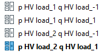
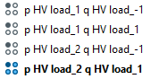
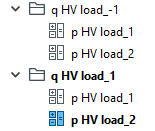
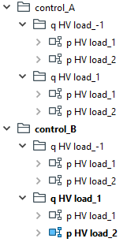
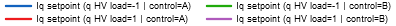

The tutorials have been moved to the website. The version here is no longer maintained.
Parameter studies are organized in study cases, operation scenarios and variations in PowerFactory. This tutorials shows how to create parameter studies with ease and fully automated using the study cases interface of powfacpy.
First, we activate the PowerFactory project as in the getting started tutorial.
# If you use IPython/Jupyter:import syssys.path.append(r"C:\Program Files\DIgSILENT\PowerFactory 2023 SP5\Python\3.11") # you may use a different directory# Get the PF appimport powerfactoryimport powfacpyapp = powerfactory.GetApplication()app.Show()app.ActivateProject(r"powfacpy\powfacpy_tests_copy_where_tests_run") # You may change the project path.
0
1 Simple Parameter Study
We use the class StudyCases. This class inherits from PFActiveProject, so all methods from that class are available. We want to create study case with various values for the active and reactive power of a load.
First we set the attribute parameter_values and define a dictionary with parameter names and a list of values. Each element in the lists is used in one study case.
from powfacpy.applications.study_cases import StudyCasespfsc = StudyCases(app)# Turn auto formatting off for readability of parameter_values# fmt: offpfsc.parameter_values = {"p HV load": [1, 2, 1, 2],"q HV load": [-1, -1, 1, 1], }# fmt: on
Here we have defined four study cases and in the first case p HV load equals 1 and q HV load equals -1. The parameter names must not contain *?=“,~|()! as these characters cannot be used for names of objects in PF.
Next we connect the variables to the PF database by defining a dictionary with paths in the attribute parameter_paths using the same parameter names as keys. The paths include the attribute name (e.g. plini which is the active power of the load).
pfsc.parameter_paths = {"p HV load": r"Network Model\Network Data"r"\test_case_studies\Grid 2\General Load HV\plini", # This is one string split over several lines"q HV load": r"Network Model\Network Data"r"\test_case_studies\Grid 2\General Load HV\qlini",}
Finally we define the active grids. For now, we assume that for all cases exactly one grid is active (we look at more complicated cases later).
Now let’s create the study cases (and corresponding operation scenarios) in a new folder named ‘Autocreated’:
pfsc.parent_folder_study_cases = pfsc.act_prj.create_in_folder("Autocreated.IntFolder", folder=pfsc.act_prj.study_cases_folder)pfsc.parent_folder_scenarios = pfsc.act_prj.create_in_folder("Autocreated.IntFolder", folder=pfsc.act_prj.operation_scenarios_folder)# Alternatively, just usepfsc.set_parent_folders_for_cases_scenarios_variations("Autocreated")pfsc.create_cases()
This creates the following study cases in the ‘Autocreated’ folder:

The names of the study cases are created according to the parameter names and their values (“_” is used instead of “=” which is not allowed in PF object names). Furthermore, the corresponding operation scenarios are created:

For more complicated case studies with further parameters, it is advisable to structure the cases in folders. We define the attribute hierarchy using a list (in this case with onl yone item) of parameter names that corresponds to folder directories.
pfsc.hierarchy = ["q HV load"]pfsc.create_cases()
Now q HV load is used for the folder names and not in the study case name.

The structure of the operation scenarios is similar.
2 Advanced Parameter Study
Let’s take a look at a more complex parameter study.
An additional parameter control is defined. Note that there is no parameter path defined for this parameter. The parameter can be seen as a placeholder for the study cases structure and to do more complicated things than simply setting an attribute of a PF object later (we’ll see below).
By default, study cases and operation scenarios are created. If variations should be created in addition, use:
pfsc.add_variation_to_each_case =True
This can be necessary because some parameters, like attributes of DSL objects, are stored in variants and not in operation scenarios. Let’s again create the study cases.
This creates the following structure in the network variations (as well as in the scenarios and study cases):

Let’s set further parameters, add plots (using plot interface) and simulate (using dyn. simulation interface) for each study case. The study case objects are stored in the study_cases attribute. We can iterate through the cases and set parameters depending on the previously defined control parameter.
from powfacpy.applications.plots import Plotsfrom powfacpy.applications.dynamic_simulation import DynamicSimulationpfpi = Plots(app)pfds = DynamicSimulation(app)dsl_controller_obj = pfsc.act_prj.get_unique_obj(r"Network Model\Network Data"r"\test_case_studies\Grid 2\WECC WT Control System Type 4A\REEC_A Electrical Control Model")for case_num, study_case_obj inenumerate(pfsc.study_cases): study_case_obj.Activate()# Set controller parametersif pfsc.get_value_of_parameter_for_case("control", case_num) =="A": pfsc.act_prj.set_attr(dsl_controller_obj, {"PfFlag": 0, "VFlag": 1})elif pfsc.get_value_of_parameter_for_case("control", case_num) =="B": pfsc.act_prj.set_attr(dsl_controller_obj, {"PfFlag": 1, "VFlag": 0})# Prepare plots pfpi.clear_plot_pages() pfpi.set_active_plot("Reactive current", "WPP") pfpi.plot(dsl_controller_obj, "s:Iqcmd")# Simulate pfds.initialize_and_run_sim()
Let’s walk through this piece of code. The plotting and simulation interfaces are instantiated and a DSL object is assigned to be used later.
It is iterated through the study cases objects (and case numbers) and each study case is activated. Then the controller parameters are set. The value of the control parameter is obtained using the method get_value_of_parameter_for_case and the controller parameters are set depending on the controller type (A or B). This provides the flexibility to adjust the study cases depending on previously defined parameters in any way (e.g. set parameters, activate grids, …). And all settings are stored in the previously defined operation scenarios/variations.
Finally, a plot is created for every case and the dynamic simulation is executed.
3 Compare Study Cases
It is often required to compare the results of cases. In the following, we use the previously defined cases to compare the simulation results for cases where the parameter p HV load equals 1 (note that you may have to “Rebuild” the plot in the upper left for PF to show it correctly):
# Create a study case where results from other cases are compared in a plotstudy_case_comparison = pfsc.act_prj.create_by_path(r"Study Cases\Autocreated\Comparison.IntCase")study_case_comparison.Activate()pfpi.clear_plot_pages()pfpi.set_active_plot("Reactive current controller setpoint for p HV load = 1", "Comparison ")dsl_controller_obj = (r"Network Model\Network Data\test_case_studies"r"\Grid 2\WECC WT Control System Type 4A\REEC_A Electrical Control Model")for case_num, study_case_obj inenumerate(pfsc.study_cases):if pfsc.get_value_of_parameter_for_case("p HV load", case_num) ==1:# Get results object from respective study case results_obj = pfsc.act_prj.get_unique_obj("*.ElmRes", parent_folder=study_case_obj )# Create label for plot case_label = pfsc.get_case_params_value_string( case_num, omitted_parameters="p HV load", delimiter=" | ", equals_sign="=" ) label ="Iq setpoint ("+ case_label +")"# Plot pfpi.plot(dsl_controller_obj, "s:Iqcmd", results_obj=results_obj, label=label)
This creates a plot with legend:

Let’s walk through the code. After creating a study case where the results are compared in a plot, it is again iterated through all cases. For cases where p HV load has a certain value, the result object is fetched. Next we want to create a label for the curve in the plot. We use the method get_case_params_value_string with certain options for the delimiter and the equals symbol (here we have more options than for PF object names, i.e. = and | are allowed). Moreover, the parameter p HV load is omitted because it is the same for all compared cases (i.e. 1, see condition). Further information on the variable is added to the label and the curve is finally added to the plot.
An alternative to iterating through all study cases is to get certain cases using the method get_study_cases:
study_cases_p_HV_load_equals_1 = pfsc.get_study_cases({"p HV load": lambda x: x ==1})for study_case_obj in study_cases_p_HV_load_equals_1:pass# do something with the specific cases
get_study_cases takes a dictionary as input, where lambda functions with conditions for parameters are defined. Note that the methods get_value_of_parameter_for_case and get_case_params_value_string also work with study case objects as inputs instead of case numbers.
A very convenient yet powerful alternative to ‘get_study_cases’ especially for complicated conditionals is ‘get_study_cases_from_string’. This method simply accepts a string which can contain complicated conditionals:
study_cases_from_conditionals = pfsc.get_study_cases_from_string("p HV load >= 2 and (control == 'A' or q HV load != 1)")
That makes it very easy to plot and compare certain cases.
4 Permutation
It is also possible to create study cases for the permutation of the parameters (i.e. all combinations). This is achieved with the method apply_permutation. Define the parameter values first (and also the hierarchy if applicable) and then call the method. Make sure that the PF application is hidden to improve the performance (if not hidden, this can take minutes and otherwise only seconds - the ‘try-finally’ block ensures that the app is always shown in the end even if an exception is thrown):
apply_permutation irreversibly replaces the values in parameter_values with the permutation.
It may be desirable to use the permutation but omit certain combinations. These omitted combinations can be defined in a list of dictionaries and used as a keyword argument as follows (note that we clear the parent folders from the formerly created objects first):
The first dictionary causes any combinations where “q HV load” is 1 and “control 2” is “R” to be omitted (these cases will not be created when create_cases is called). In the second dictionary, the keyword “all” is used. This means that all combinations with this parameter are omitted.
5 Further Functionality
The attributes of StudyCases instances allow to set further options.
The study case names can be numbered consecutively setting consecutively_number_case_names.
Sometimes it is convenient to use only parameter values without the parameter names for the folder/study case names (imagine the value of a parameter is expressive enough and you don’t want to use “Controller_GridCode2012Controller” but only “GridCode2012Controller” instead). This can be achieved by adding parameters to the list of anonymous_parameters (e.g. pfsc.anonymous_parameters=["Controller","FurtherParName"]).